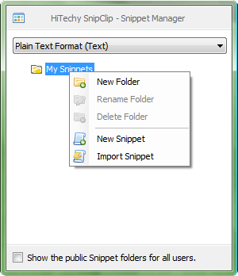
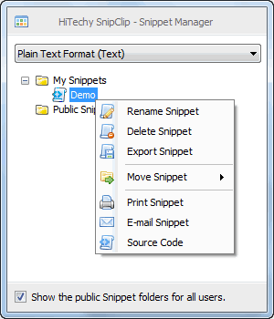
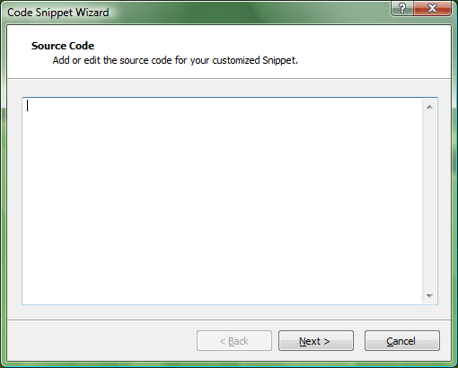
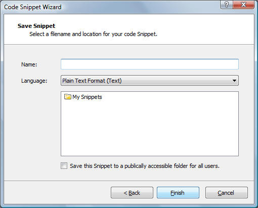
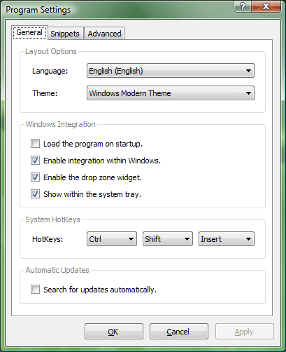
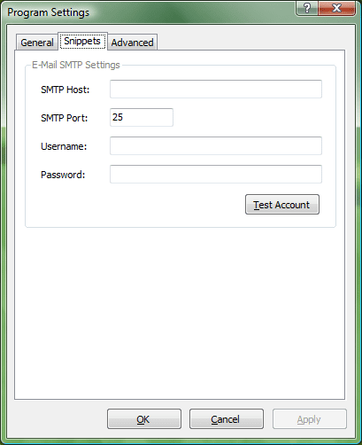
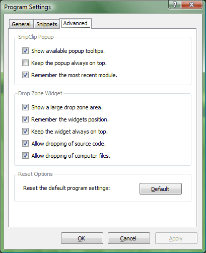
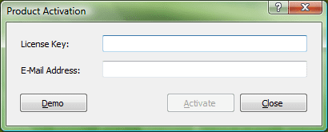
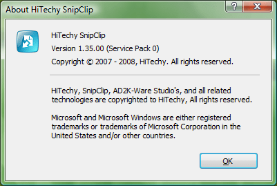

The app sits silently in your system tray rather than being pinned to a corner of your screen, making it visible only when you require it - wasting no screen space. The context menu allowed you to access key components quickly and easily. The entire app took up less than 400kb of hard disk space and less than 1mb of memory. It's small and speedy!
The DropZone was a feature you could easily enable or disable on-demand that hovered on the desktop, allowing you to drop text or entire files into the application to be saved as long form text snippets. Great for people wanting to avoid mashing keyboard commands or wanting a large block of code turned into a file.
This is SnipClip's main window. You could add multiple file formats to the dropdown using the XML interface (see the guide), and you could add snippets either to your own folders or to a publicly available folder (visible to all users on the network). As shown in the image, you could also add or import snippets directly to the selected folder using the built in wizard.
With snippets imported you have many options. You can rename or delete them (just like folders), export them, move them, drag and drop them (within or out of the app), view the source code, email them, or print them! All of the options are available at a single click of the context menu and the tree structure allows for ease of organization and management.
When you add a snippet you can tweak the code. Syntax highlighting was unavailable but the code editor is able to handle thousands of lines with ease. Everything is kept in a XML database (in an open format). In the next panel you provide a memorable name (to be shown in SnipClip) and pick the language and folder it best fits under.
 SnipClip was a fledgeling app with some nice features such as hotkeys, system tray support, native emailing, custom tooltips, and drag & drop application support. If I'd developed it further, additional features would have been added such as extended clipboard support, syntax highlighting, extended keyboard controls and built-in Web developer boilerplates.
  SnipClip was built from the ground up using the .NET framework. It offered a free demo mode plus a paid version utilizing a custom built licensing system. XML databases and salt+SH1+encryption were used alongside a PHP server-side script to connect to PayPal's IPN system to pull it together. No third party libraries or tools were used!
HiTechy SnipClip went through five general releases consisting of major new features, updates and bug fixes. While it's no longer being actively developed, the core product still works, even on Windows 10! The programmable XML databases that manage the language files (and snippets) were built to be interoperable with comparable Web formats like JSON (if transpiled) using a converter.
- SnipClip was a portable app! You could take the executable and place it on a USB drive along with it's XML user data files and use your snippets anywhere - It just worked.
- Have a language not supported? Add it yourself! Within the Filter.xml file you can add Lang tags for any syntax language and it'll appear in SnipClip's dropdown menu, ready for use.
- SnipClip was very agile, so much so that the snippet manager can handle up to 35,000 pieces of code - though you'll be scrolling a lot to navigate all that code.
- You can use keyboard shortcuts like F2 (Rename) and Del (Delete) within the application. SnipClip also supports drag and drop moving of created snippets between folders.
- The application had a few easter eggs built in to make the app more fun, but importantly, it will auto-fix missing or corrupt XML databases and resolve product manuals.
- The product was built to be expandable. SnipClip contained a control panel with selectable modules. Upon release it had just one with the option to add more in future updates.